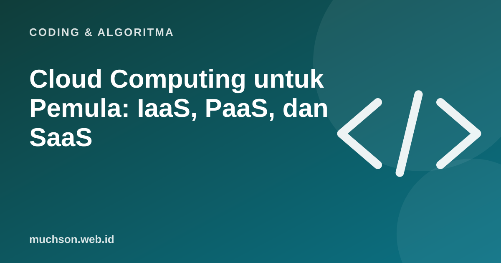

Beranda › Artikel › Coding & Algoritma
Coding & AlgoritmaCloud Computing untuk Pemula: IaaS, PaaS, dan SaaS
Menyimpan foto di Google Photos, rapat lewat Zoom, dan aplikasi startup yang berjalan di AWS: semuanya memakai cloud computing. Istilahnya sering terdengar, tetapi jarang dijelaskan dengan jelas. Artikel ini menguraikan definisinya, jenis layanannya, dan kenapa banyak perusahaan beralih ke cloud.

Definisi singkat
Institut standar Amerika Serikat, NIST, dalam publikasi SP 800-145 mendefinisikan cloud computing sebagai model yang memungkinkan akses jaringan sesuai kebutuhan ke kumpulan sumber daya komputasi bersama (server, penyimpanan, aplikasi, layanan) yang bisa disediakan dan dilepas dengan cepat, dengan upaya pengelolaan minimal. NIST menyebut lima ciri utamanya:
- Layanan mandiri sesuai kebutuhan: pengguna menambah server tanpa menelepon penyedia.
- Akses jaringan luas: bisa diakses lewat internet dari berbagai perangkat.
- Sumber daya bersama: banyak pelanggan memakai infrastruktur yang sama secara terpisah.
- Elastis: kapasitas bisa naik turun dengan cepat.
- Terukur: pemakaian diukur, sering dibayar sesuai pemakaian.
IaaS, PaaS, SaaS dengan analogi pizza
| Model | Yang disediakan penyedia | Yang Anda kelola | Contoh |
|---|---|---|---|
| IaaS | Server virtual, jaringan, penyimpanan | Sistem operasi, runtime, aplikasi, data | AWS EC2, Google Compute Engine, Azure VM |
| PaaS | Infrastruktur + platform menjalankan aplikasi | Kode aplikasi dan data | Google App Engine, Heroku, Cloudflare Workers |
| SaaS | Aplikasi siap pakai | Data dan pengaturan akun | Gmail, Google Workspace, Microsoft 365, Zoom |
Model penerapan
| Model | Penjelasan |
|---|---|
| Public cloud | Infrastruktur milik penyedia, dipakai banyak pelanggan |
| Private cloud | Dipakai satu organisasi, bisa di pusat data sendiri |
| Hybrid cloud | Gabungan, misalnya data sensitif di private dan aplikasi web di public |
Kelebihan dan risiko
Salah satu penyebab kebocoran data di cloud bukan karena cloud-nya diretas, melainkan konfigurasi yang keliru, misalnya penyimpanan berkas yang tidak sengaja dibuat publik. Prinsip tanggung jawab bersama: penyedia mengamankan infrastruktur, pelanggan mengamankan konfigurasi dan data.
Hitung: server sendiri atau cloud?
Cara mulai belajar cloud
- Pahami dasar Linux, jaringan (IP, DNS, HTTP), dan satu bahasa pemrograman.
- Pilih satu penyedia (AWS, Google Cloud, atau Azure) dan manfaatkan paket gratisnya untuk latihan.
- Deploy aplikasi sederhana: situs statis, lalu aplikasi dengan database.
- Selalu pasang peringatan anggaran (budget alert) agar tidak kaget dengan tagihan.
- Pelajari keamanan dasar: akses minimal, kunci yang aman, enkripsi.
- Pertimbangkan sertifikasi tingkat dasar dari penyedia sebagai target belajar.
Tanya jawab
Apa itu cloud computing?
Apa beda IaaS, PaaS, dan SaaS?
Apakah Google Drive termasuk cloud?
Apakah cloud selalu lebih murah?
Sumber dan bacaan lanjut
- NIST SP 800-145: The NIST Definition of Cloud Computing
- AWS: What is cloud computing?
- Docker untuk pemula (artikel terkait)